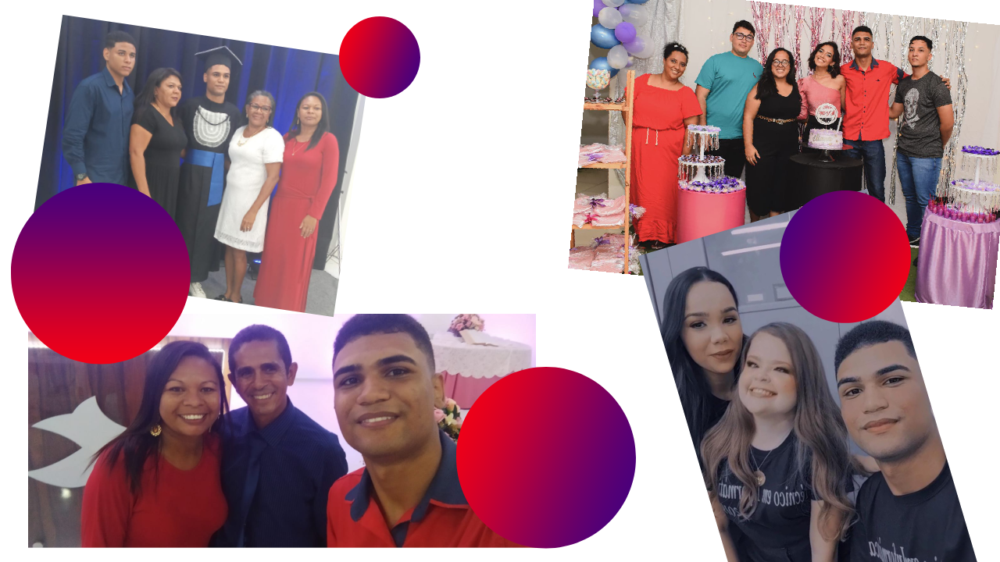

Minha carta de apresentação
Sobre mim
Olá, me chamo Lucas Guedes estou em constante desenvolvimento de minhas habilidades para se tornar um Developer e alcançar uma carreira sólida e promissora na área de desenvolvimento. Já possuo experiência em programação adquirida durante o meu curso técnico em informática.

Objetivo no curso
Meu objetivo no curso é crescer profissionalmente, desenvolver novas habilidades, adquirir conhecimentos e puder e cooperar com a empresa através dos meus conhecimentos na de front-end

Minha família e meus amigos
Minha família e amigos têm sido uma fonte constante de motivação e encorajamento, sempre me incentivando a buscar meus objetivos e me apoiando em cada passo da minha jornada.
Minha família sempre foi uma presença constante e amorosa em minha vida. Eles me encorajam a seguir meus sonhos e me dão o suporte necessário.
Além da minha família, meus amigos também têm sido uma fonte importante de apoio. Eles me dão força quando estou me sentindo desanimado e me encorajam a seguir em frente, mesmo quando as coisas parecem difíceis. Eles são uma parte fundamental da minha rede de suporte, e sou grato por tê-los em minha vida.